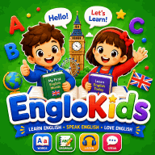

La mejor edad para aprender un segundo idioma — y cómo empezar en casa
Muchas familias preguntan si es «demasiado tarde» o «demasiado pronto» para un nuevo idioma. La respuesta sincera es tranquilizadora: no hay una edad mágica. Los niños pequeños tienen ventaja con el acento, los mayores aprenden más rápido gramática y vocabulario, y a cualquier edad lo que más importa es cuánto escucha el niño el idioma, cómo lo usa y si lo disfruta.
- Qué dice la investigación sobre la edad
- Mitos frecuentes sobre los niños bilingües
- Qué funciona mejor a cada edad
- Cómo ayudar aunque no hables el idioma
- Una rutina semanal realista
- Cómo saber si está funcionando
1. Qué dice la investigación sobre la edad
Los estudios sobre el aprendizaje de idiomas coinciden en varios puntos:
- Pronunciación: los niños que empiezan pronto, sobre todo antes de los 7 años aproximadamente, tienen más probabilidades de lograr un acento casi nativo.
- Rapidez a corto plazo: los niños mayores y los adolescentes suelen aprender más rápido la gramática y el vocabulario al principio, porque ya leen, razonan y saben cómo funciona su propia lengua.
- El factor decisivo: la cantidad total de exposición con sentido a lo largo de los años. Un niño que empieza a los 4 años con diez minutos a la semana puede saber menos a los 10 que otro que empezó a los 8 con práctica diaria.
Empezar pronto es una ventaja, no una obligación. La mejor edad para empezar es la que tiene tu hijo ahora, con un plan que podáis mantener.
2. Mitos frecuentes sobre los niños bilingües
| Mito | Lo que realmente sabemos |
|---|---|
| «Dos idiomas lo van a confundir.» | Los niños pueden aprender dos o más idiomas a la vez. Enseguida aprenden qué idioma corresponde a cada persona o situación. |
| «Un segundo idioma retrasa el habla.» | Los niños bilingües alcanzan los hitos del lenguaje dentro de los plazos normales. Su vocabulario se reparte entre los idiomas, así que cada uno puede parecer menor, pero el total es parecido. |
| «Mezclar idiomas en una frase es un problema.» | La mezcla, llamada alternancia de códigos, es una etapa normal y también la usan los adultos bilingües con fluidez. |
| «A partir de los 10 años ya es tarde.» | Se aprenden idiomas con éxito a cualquier edad. Los mayores simplemente aprenden de otra manera. |
Muchas familias ya viven esta realidad. En Marruecos, por ejemplo, un niño puede hablar dariya o amazig en casa, aprender árabe estándar y francés en el colegio y descubrir el inglés con canciones y juegos. El plurilingüismo es normal, y cada idioma puede apoyar a los demás.
3. Qué funciona mejor a cada edad
| Edad | Cómo aprenden | Mejores actividades |
|---|---|---|
| 0–3 años | Escuchando e imitando a las personas que quieren | Canciones, rimas, hablar durante las rutinas diarias, libros de imágenes |
| 3–6 años | Con juego, movimiento y repetición | Canciones con gestos, juegos de imágenes y palabras, juego simbólico (tienda, médico), dibujos animados cortos vistos juntos |
| 6–9 años | Empiezan a leer y disfrutan de reglas y retos | Lectura fonética en el nuevo idioma, libros sencillos, juegos de palabras, concursos, etiquetas en casa |
| 10–12 años | Pueden reflexionar sobre la gramática y hacer proyectos | Cómics y lecturas graduadas, mensajes cortos por escrito, proyectos sobre lo que les gusta, videollamadas con amigos por correspondencia |
4. Cómo ayudar aunque no hables el idioma
No hace falta hablarlo con fluidez para apoyar a tu hijo. Lo que aportas es exposición regular, una actitud positiva y curiosidad.
- Crea un «momento del idioma». Por ejemplo, canciones en inglés en el desayuno o unos dibujos en francés después del colegio. La regularidad importa más que la duración.
- Aprende junto a tu hijo. Decir «No conozco esa palabra, vamos a buscarla juntos» muestra que aprender es normal a cualquier edad.
- Usa audio. Libros ilustrados con audio, canciones y vídeos cortos le dan la pronunciación correcta aunque la tuya sea insegura.
- Pon etiquetas en casa. Notas adhesivas en la puerta, la nevera y la ventana convierten la casa en un diccionario ilustrado.
- Busca motivos reales para usarlo. Una videollamada con un primo en el extranjero, pedir en ese idioma durante las vacaciones o un juego que solo se juega en él.
- Elogia la comunicación, no la perfección. Si tu hijo se hace entender, celébralo. Corrige con suavidad repitiendo bien la frase en lugar de decir «está mal».
5. Una rutina semanal realista
Entre quince y veinte minutos al día, repartidos en actividades distintas, bastan para avanzar de forma constante:
| Día | Actividad (15–20 minutos) |
|---|---|
| Lunes | Dos canciones con gestos y nombrar cinco objetos de la habitación |
| Martes | Un libro ilustrado con audio y contarlo de nuevo con las imágenes |
| Miércoles | App o juego de palabras online (10 minutos) y un pequeño concurso en la cena |
| Jueves | Juego de roles: tienda, restaurante o médico, con las palabras nuevas |
| Viernes | Unos dibujos cortos en el idioma vistos juntos y después «¿qué ha pasado?» |
| Fin de semana | Un uso real: videollamada, receta en el idioma o juego entre hermanos |
6. Cómo saber si está funcionando
El progreso en un idioma nuevo no siempre se ve. Los niños suelen entender mucho más de lo que dicen, y un «periodo silencioso» en el que escuchan sin hablar es normal, sobre todo en los pequeños. Algunas buenas señales:
- tu hijo reacciona bien a instrucciones sencillas en el idioma;
- canta canciones o repite frases de forma espontánea;
- empieza a preguntar «¿Cómo se dice … en inglés?»;
- usa palabras en la situación adecuada sin que se lo pidan.
Recursos gratis en Kids Learning Hub
Nuestro juego Une las palabras permite relacionar imágenes y palabras en cinco idiomas, nuestros cuentos para dormir están en cuatro idiomas para escuchar la misma historia en cada uno, y nuestras fichas de palabras imprimibles acompañan los primeros pasos de lectura en un nuevo idioma.

Aprende inglés con juegos cortos, canciones y trazos, con audio de hablantes nativos — sin conexión y gratis.
Sea cual sea la edad de tu hijo, empieza con poco, sé constante y que sea divertido. Un idioma que forma parte de la vida familiar, aunque sea quince minutos al día, crece año tras año.
Preguntas frecuentes
¿Cuál es la mejor edad para que un niño aprenda un segundo idioma?
No hay una única edad ideal. Los niños que empiezan antes de los 7 años aproximadamente suelen lograr un acento más nativo, mientras que los mayores aprenden más rápido gramática y vocabulario al principio. Lo que más cuenta es una exposición regular y con sentido durante años.
¿Aprender dos idiomas confundirá a mi hijo o retrasará su habla?
No. Los niños pueden aprender varios idiomas a la vez y alcanzan los hitos del lenguaje dentro de lo normal. Mezclar idiomas es una etapa normal. Si un niño va retrasado en todos sus idiomas, consulta con un profesional.
¿Cómo enseño a mi hijo un idioma que yo no hablo?
Crea momentos diarios cortos con canciones, audiolibros y dibujos animados, pon etiquetas en casa, aprende junto a tu hijo y busca motivos reales para usar el idioma, como videollamadas o juegos.